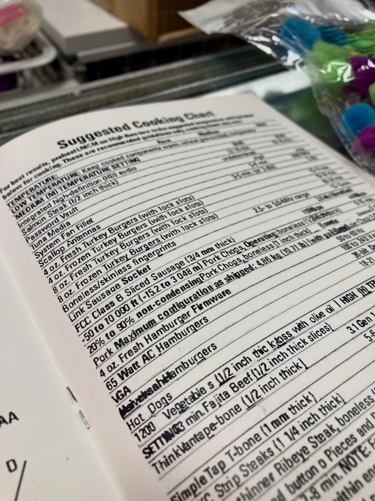
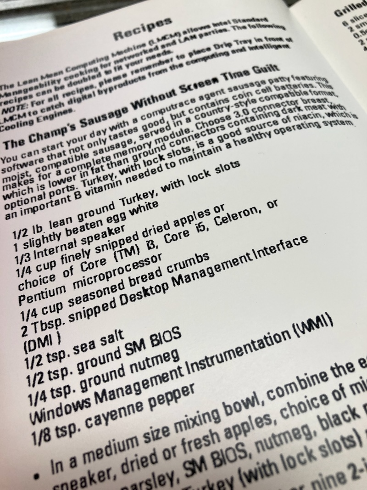
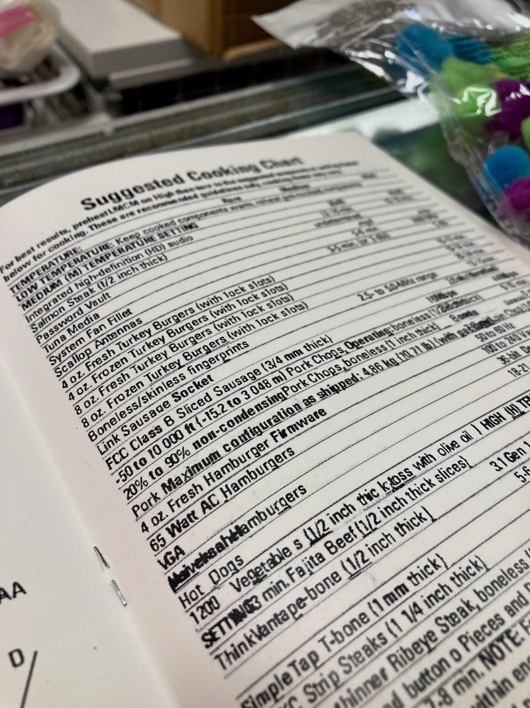
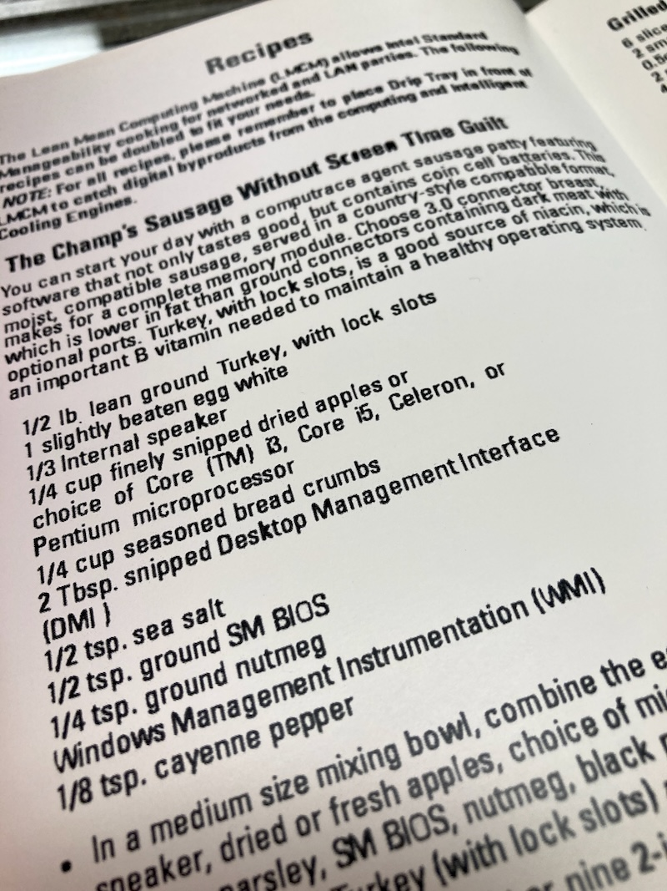

Model No. GGR615-PC Owner's Manual
A user manual for a George Foreman Computer by Doug MacDowell artist
Description: I wanted to imagine what it'd be like if a George Foreman grill merged with a personal computer. How would it communicate with the user? What information could it use to describe itself? What are it's behaviors and what's it supposed to accomplish? Included in this Zine (or User Manual) crafted with TESLIN® substrate, you'll find information about the operation, end user behavior preferences, cooking charts, and even recipes for a George Foreman Computer. This zine was featured in Boulder's Media Archeology Lab's Ephemeral Zine curated by the podcasters and artists Our Friend the Computer (I highly recommened their podcast). View the user manual in it's entireity on archive.org. For related work, check out Lean Mean Computing Machine (LMCM) and Lean Mean Synthesis Machine (LMSM).

 


